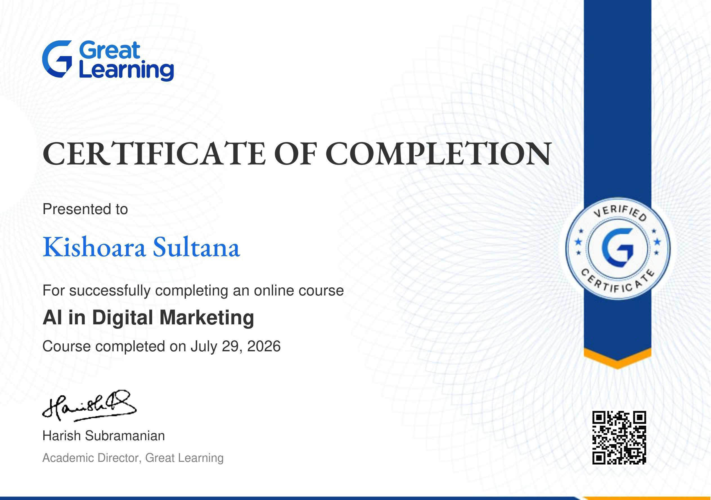
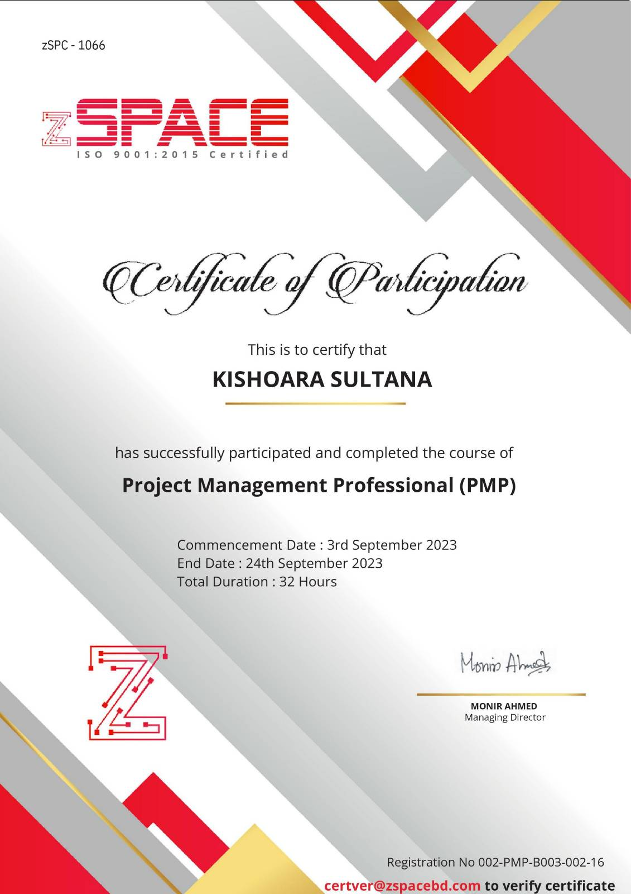
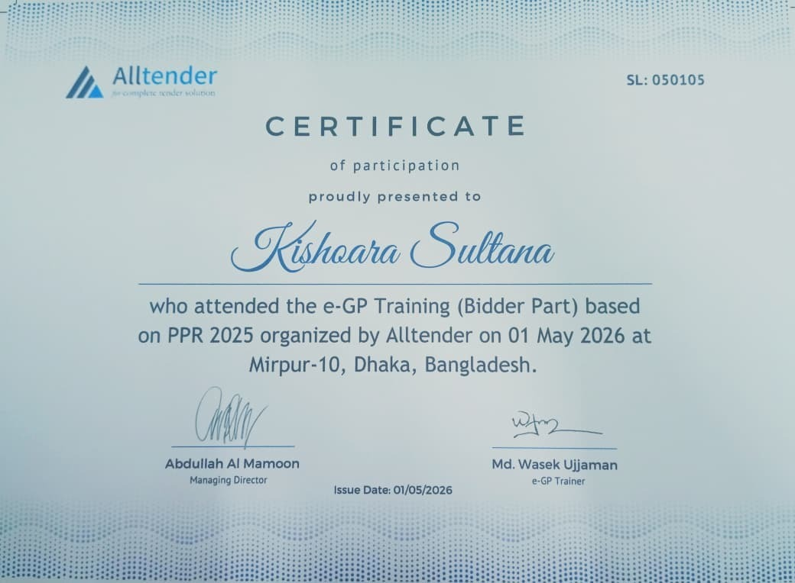

Project Coordinator | Information Systems Professional | Digital Transformation
Building practical technology solutions for government and enterprise organizations.
Computer Science graduate with 4+ years managing enterprise software projects serving 1M+ users across 10+ government agencies in Bangladesh. Specializing in digital transformation, enterprise systems architecture, and data-driven strategic decision-making for large-scale government initiatives.
Enterprise Projects
Users Served
Team Members Led
Southeast University| 2016 – 2020
Symphony Softtech Ltd. | January 2026 - Present
Syntech Solution Ltd. | July 2022 - December 2025
Titas Gas Transmission & Distribution Company Limited (TGTDCL) | Dec 2020 - Mar 2021
Teaching and mentorship have been an important part of my career. I have mentored more than 30 junior developers in system architecture, data modeling, and machine learning, and provided training to more than 150 professionals in Agile methodology and systems analysis. These experiences have strengthened my ability to explain technical ideas clearly, create practical training materials, and work with people from different technical backgrounds.
Symphony Softtech Ltd. | January 2026 - Present
Syntech Solution Ltd. | 2022 - 2025
Southeast University | 2016 - 2020
Enterprise maintenance management platform coordinating equipment servicing, asset tracking, and technical workflows for Bangladesh's leading oil refinery, improving maintenance scheduling and operational uptime.
Role: Technical team & stakeholder coordination
Centralized web-based enterprise platform designed to streamline MPL’s operational activities, improve workflow efficiency, and support integrated business processes.
Role: Technical team & stakeholder coordination
The MSW Services Portal digitizes Bangladesh’s social welfare programs, enabling citizens to apply for aid, pensions, and support online, reducing service delivery time by 60%.
Impact: 1M+ users across government agencies
MoA Services Portal brings45+ agriculture services online, modernizing licensing, permits, and farmer support nationwide, reducing service delivery time by 50%.
Impact: 1M+ users across MoA agencies
Smart digital platform for managing water meters, enhancing transparency across Dhaka households, reducing service delivery time by 40%.
Impact: 0.5M+ users nationwide
Bangladesh’s first government-run agro marketplace connecting farmers directly with consumers, ensuring fair prices and reducing middlemen.
Impact: 0.2M+ users nationwide
Next-gen Warehouse Management System improving inventory control, logistics, and operational efficiency across the supply chain.
Impact: 1M+ users worldwide
A unified digital system offering licenses, permits, and trade services, improving transparency and nationwide accessibility.
Impact: 1M+ users across trade services
A modern ERP system delivering seamless employee management with automated workflows for enhanced organizational efficiency.
Impact: 10,000 BADC employees
Real-time stock tracking with automated monitoring and insightful analytics to streamline supply chain operations.
Impact: 5,000+ users across the ministry
A digital system streamlining postgraduate admissions, centralizing applicant data, and enhancing the experience for students & administrators.
Impact: 10,000+ university users
A complete inventory monitoring solution offering automated tracking, prevention of shortages, and actionable stock insights.
Impact: 1,000+ MoA users
Full-stack analytics platform visualizing correlations between social media usage and mental health indicators across 500-user dataset.
Developed multi-class sentiment classifier for healthcare drug reviews using TF-IDF and Random Forest with 5-tier scoring system.
A simple and beginner-friendly Library Management System developed in C as part of the Programming Language I (C) Lab. The system allows users to add, display, issue, and return books while storing library data using basic file handling.
Full-featured inventory tracking system with real-time stock monitoring, supplier management, and automated reporting.
Encryption and security analytics platform featuring multiple encryption algorithms and cryptographic analysis tools.
Optical Character Recognition system specialized for Bangla text extraction and digitization from PDF documents.
Educational simulator demonstrating various memory allocation strategies and management techniques in operating systems.
Academic Research
Developed a multi-class sentiment analysis system to predict drug review ratings with fine-grained classification. Research focused on applying machine learning techniques (TF-IDF, Random Forest) to healthcare domain-specific text analysis.
Read ResearchSentiment analysis, text classification, and language understanding for domain-specific applications
Large-scale data analysis, predictive modeling, and actionable insights for business intelligence
Microservices design, system integration, and scalable infrastructure for government services
Technology adoption strategies, process optimization, and change management for public sector

Certificate of completion for the "AI in Digital Marketing" online course, issued by Great Learning.
Verify Certificate
Certificate of participation for successfully completing the Project Management Professional (PMP) course. The course consisted of 32 hours of training and was completed in September 2023.

Certificate of participation for attending the e-GP Training (Bidder Part) based on PPR 2025, organized by Alltender in Mirpur-10, Dhaka, Bangladesh.
Enterprise Systems: Enterprise Software, Information Systems, E-Government Systems, Digital Service Delivery
Systems Analysis: Requirements Analysis, Requirements Gathering, Functional Specifications, System Documentation
System Integration: API Integration, RESTful APIs, Service Integration, Microservices Architecture
Digital Transformation: Business Technology, Digital Process Improvement, Technology Implementation
Business Analysis: Business Requirements, Stakeholder Analysis, Process Analysis, Functional Requirements
Process Management: Business Process Design, Workflow Analysis, Process Improvement, Process Optimization
Stakeholder Engagement: Client Communication, Requirement Elicitation, Cross-functional Collaboration
Documentation: Technical Documentation, Requirements Documentation, System Specifications
Databases: Oracle 19c, MySQL, SQLite, Database Design, Data Modeling, SQL
Business Intelligence: Power BI, Tableau, Excel, Dashboard Development, Data Visualization
Analytics: Predictive Analysis, Statistical Analysis, Data Interpretation, Decision Support
Machine Learning: Scikit-learn, TensorFlow, Classification, Sentiment Analysis, Data Preprocessing
Languages: Python, C++, SQL, JavaScript, R
Frameworks: React, Vue.js, Laravel, Flask, Scikit-learn, TensorFlow
Development: Full-Stack Development, RESTful API Development, Web Application Development
Tools: Git/GitHub, Docker, Linux/Unix CLI, CI/CD, LaTeX
Methodologies: Agile, Scrum, Sprint Planning, Iterative Development
Project Coordination: Project Planning, Timeline Management, Deliverable Tracking, Resource Coordination
Risk Management: Risk Assessment, Issue Tracking, Dependency Management, Problem Resolution
Stakeholder Management: Client Communication, Project Reporting, Requirement Alignment, Stakeholder Engagement
Team Leadership: Cross-functional Team Management, Technical Team Coordination, Team Collaboration
Mentorship: Junior Developer Mentorship, Technical Training, Knowledge Sharing
Communication: Client Presentations, Technical Presentations, Requirements Discussions, Executive Communication
Training: Agile/Scrum Training, Systems Analysis Training, Technical Documentation Training
Enterprise Applications: Enterprise Software Implementation, Business Management Systems, Audit Management Systems
Government Technology: E-Government Services, Public Sector Systems, Government Stakeholder Engagement
Implementation: System Deployment, User Requirements, Testing Coordination, Implementation Support
Industry Experience: Government, Pharmaceuticals, Manufacturing, Finance, Logistics
Research: Research Methodology, Literature Review, Experimental Design, Technical Research
Data Research: Data Collection, Data Preprocessing, Classification, Sentiment Analysis
Academic Work: Technical Writing, Research Documentation, Academic Report Writing
Tools: Python, R, LaTeX, Scikit-learn, TensorFlow
Dhaka, Bangladesh